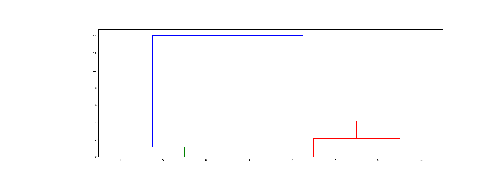
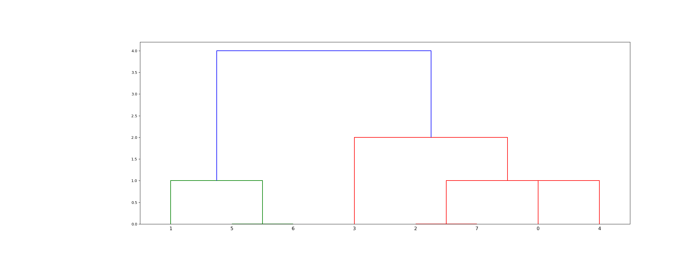

scipy.cluster.hierarchy.linkage¶
-
scipy.cluster.hierarchy.linkage(y, method='single', metric='euclidean', optimal_ordering=False)[source]¶ Perform hierarchical/agglomerative clustering.
The input y may be either a 1-D condensed distance matrix or a 2-D array of observation vectors.
If y is a 1-D condensed distance matrix, then y must be a \(\binom{n}{2}\) sized vector, where n is the number of original observations paired in the distance matrix. The behavior of this function is very similar to the MATLAB linkage function.
A \((n-1)\) by 4 matrix
Zis returned. At the \(i\)-th iteration, clusters with indicesZ[i, 0]andZ[i, 1]are combined to form cluster \(n + i\). A cluster with an index less than \(n\) corresponds to one of the \(n\) original observations. The distance between clustersZ[i, 0]andZ[i, 1]is given byZ[i, 2]. The fourth valueZ[i, 3]represents the number of original observations in the newly formed cluster.The following linkage methods are used to compute the distance \(d(s, t)\) between two clusters \(s\) and \(t\). The algorithm begins with a forest of clusters that have yet to be used in the hierarchy being formed. When two clusters \(s\) and \(t\) from this forest are combined into a single cluster \(u\), \(s\) and \(t\) are removed from the forest, and \(u\) is added to the forest. When only one cluster remains in the forest, the algorithm stops, and this cluster becomes the root.
A distance matrix is maintained at each iteration. The
d[i,j]entry corresponds to the distance between cluster \(i\) and \(j\) in the original forest.At each iteration, the algorithm must update the distance matrix to reflect the distance of the newly formed cluster u with the remaining clusters in the forest.
Suppose there are \(|u|\) original observations \(u[0], \ldots, u[|u|-1]\) in cluster \(u\) and \(|v|\) original objects \(v[0], \ldots, v[|v|-1]\) in cluster \(v\). Recall, \(s\) and \(t\) are combined to form cluster \(u\). Let \(v\) be any remaining cluster in the forest that is not \(u\).
The following are methods for calculating the distance between the newly formed cluster \(u\) and each \(v\).
method=’single’ assigns
\[d(u,v) = \min(dist(u[i],v[j]))\]for all points \(i\) in cluster \(u\) and \(j\) in cluster \(v\). This is also known as the Nearest Point Algorithm.
method=’complete’ assigns
\[d(u, v) = \max(dist(u[i],v[j]))\]for all points \(i\) in cluster u and \(j\) in cluster \(v\). This is also known by the Farthest Point Algorithm or Voor Hees Algorithm.
method=’average’ assigns
\[d(u,v) = \sum_{ij} \frac{d(u[i], v[j])} {(|u|*|v|)}\]for all points \(i\) and \(j\) where \(|u|\) and \(|v|\) are the cardinalities of clusters \(u\) and \(v\), respectively. This is also called the UPGMA algorithm.
method=’weighted’ assigns
\[d(u,v) = (dist(s,v) + dist(t,v))/2\]where cluster u was formed with cluster s and t and v is a remaining cluster in the forest (also called WPGMA).
method=’centroid’ assigns
\[dist(s,t) = ||c_s-c_t||_2\]where \(c_s\) and \(c_t\) are the centroids of clusters \(s\) and \(t\), respectively. When two clusters \(s\) and \(t\) are combined into a new cluster \(u\), the new centroid is computed over all the original objects in clusters \(s\) and \(t\). The distance then becomes the Euclidean distance between the centroid of \(u\) and the centroid of a remaining cluster \(v\) in the forest. This is also known as the UPGMC algorithm.
method=’median’ assigns \(d(s,t)\) like the
centroidmethod. When two clusters \(s\) and \(t\) are combined into a new cluster \(u\), the average of centroids s and t give the new centroid \(u\). This is also known as the WPGMC algorithm.method=’ward’ uses the Ward variance minimization algorithm. The new entry \(d(u,v)\) is computed as follows,
\[d(u,v) = \sqrt{\frac{|v|+|s|} {T}d(v,s)^2 + \frac{|v|+|t|} {T}d(v,t)^2 - \frac{|v|} {T}d(s,t)^2}\]where \(u\) is the newly joined cluster consisting of clusters \(s\) and \(t\), \(v\) is an unused cluster in the forest, \(T=|v|+|s|+|t|\), and \(|*|\) is the cardinality of its argument. This is also known as the incremental algorithm.
Warning: When the minimum distance pair in the forest is chosen, there may be two or more pairs with the same minimum distance. This implementation may choose a different minimum than the MATLAB version.
- Parameters
- yndarray
A condensed distance matrix. A condensed distance matrix is a flat array containing the upper triangular of the distance matrix. This is the form that
pdistreturns. Alternatively, a collection of \(m\) observation vectors in \(n\) dimensions may be passed as an \(m\) by \(n\) array. All elements of the condensed distance matrix must be finite, i.e., no NaNs or infs.- methodstr, optional
The linkage algorithm to use. See the
Linkage Methodssection below for full descriptions.- metricstr or function, optional
The distance metric to use in the case that y is a collection of observation vectors; ignored otherwise. See the
pdistfunction for a list of valid distance metrics. A custom distance function can also be used.- optimal_orderingbool, optional
If True, the linkage matrix will be reordered so that the distance between successive leaves is minimal. This results in a more intuitive tree structure when the data are visualized. defaults to False, because this algorithm can be slow, particularly on large datasets [2]. See also the
optimal_leaf_orderingfunction.New in version 1.0.0.
- Returns
- Zndarray
The hierarchical clustering encoded as a linkage matrix.
See also
scipy.spatial.distance.pdistpairwise distance metrics
Notes
For method ‘single’, an optimized algorithm based on minimum spanning tree is implemented. It has time complexity \(O(n^2)\). For methods ‘complete’, ‘average’, ‘weighted’ and ‘ward’, an algorithm called nearest-neighbors chain is implemented. It also has time complexity \(O(n^2)\). For other methods, a naive algorithm is implemented with \(O(n^3)\) time complexity. All algorithms use \(O(n^2)\) memory. Refer to [1] for details about the algorithms.
Methods ‘centroid’, ‘median’, and ‘ward’ are correctly defined only if Euclidean pairwise metric is used. If y is passed as precomputed pairwise distances, then it is the user’s responsibility to assure that these distances are in fact Euclidean, otherwise the produced result will be incorrect.
References
- 1
Daniel Mullner, “Modern hierarchical, agglomerative clustering algorithms”, arXiv:1109.2378v1.
- 2
Ziv Bar-Joseph, David K. Gifford, Tommi S. Jaakkola, “Fast optimal leaf ordering for hierarchical clustering”, 2001. Bioinformatics DOI:10.1093/bioinformatics/17.suppl_1.S22
Examples
>>> from scipy.cluster.hierarchy import dendrogram, linkage >>> from matplotlib import pyplot as plt >>> X = [[i] for i in [2, 8, 0, 4, 1, 9, 9, 0]]
>>> Z = linkage(X, 'ward') >>> fig = plt.figure(figsize=(25, 10)) >>> dn = dendrogram(Z)
>>> Z = linkage(X, 'single') >>> fig = plt.figure(figsize=(25, 10)) >>> dn = dendrogram(Z) >>> plt.show()
